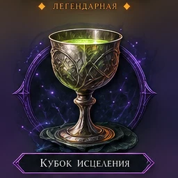
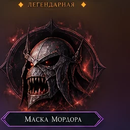

В коллекции
В коллекцииЛегендарная
Кольцо Пепельных гор
Атака +8%
3 800 ◈
Собирай артефакты, создавай наборы и усиливай стиль игры.
В коллекцииАтака +8%

Защита +8%

Опыт +10%

Крит. очки +12%
 В коллекции
В коллекцииРазведка +1

Влияние +6%

Оборона +5%
 В коллекции
В коллекцииМобильность +5%

Опыт +5%

Атака +3%

Разведка +3%

Скорость +2%
Собрано 43% доступных реликвий сезона.
Легендарная · получена 21 августа
Ещё одна реликвия откроет бонус +5% к мобильности.
В коллекцииАтака +8%
Защита +8%
Опыт +10%
Крит. очки +12%
В коллекцииРазведка +1
Влияние +6%
Клинок Первого короляКрит. очки +12%Кольцо Пепельных горАтака +8%Знамя Белого городаОборона +5%Собери 3 предмета серии «Королевские реликвии», чтобы получить дополнительный бонус.
Подробное описание эффекта, условий активации и происхождения реликвии.